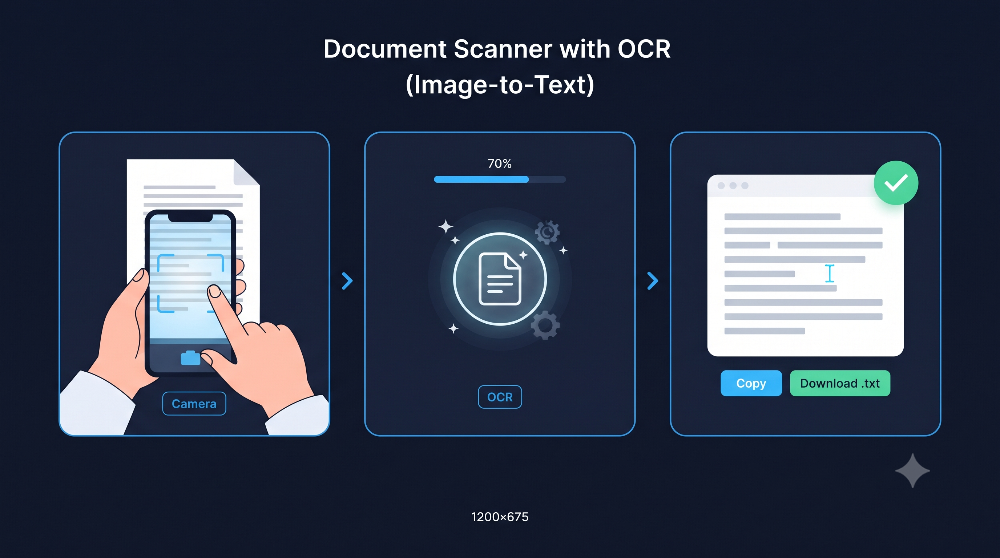

Document Scanner & Image to Text (OCR)
Extract typed text from photos, scanned documents and receipts instantly. Works with English, Hindi, and 100+ languages — 100% private, all in your browser.
Extracted Text
Complete Guide to Extracting Text from Images with Client-Side OCR
Optical Character Recognition (OCR) technology transforms physical papers, captured receipts, printed certificates, and image files into digital, editable text without requiring manual retyping. The DocEasy Document Scanner & OCR engine gives you the choice of two world-class recognition engines — both running directly in your browser — so your sensitive documents never leave your device. Whether you are digitizing classroom notes, extracting line items from a financial bill, transcribing a printed book page, or converting a scanned Aadhaar or PAN PDF into editable text, this tool handles it all in seconds.
DUnlike commercial cloud OCR platforms that upload your photos to external data warehouses, DocEasy takes a privacy-first approach. Your uploaded scan is processed locally and nothing is ever transmitted to any server. This matters especially for identity documents, bank statements, medical records, and legal contracts where a data leak could have serious consequences. You can even disconnect from the internet after the page loads and the offline engine will continue to work — an easy test to confirm that nothing is being transmitted.

📷 [Place Demo Image Here: assets/images/doc-scanner-demo.jpg]How OCR Technology Works
OCR software analyses an image pixel-by-pixel to identify patterns that correspond to characters in a specific alphabet. It works in five stages: (1) preprocessing — converting the image to grayscale and boosting contrast so text stands out from the paper; (2) layout analysis — figuring out which regions of the image contain text lines, paragraphs, or tables; (3) line and word segmentation — splitting the text region into individual lines and then individual characters; (4) character recognition — matching each character shape to a trained model for that font; and (5) post-processing — applying dictionary and grammar rules to correct obvious errors. Modern OCR engines train on hundreds of thousands of fonts and can achieve 95-99% accuracy on clean printed text.
How to Use the DocEasy Document Scanner
- Step 1 — Take a photo or upload: Tap "📷 Take a Photo" to open your device's camera (mobile) or "📁 Upload File" to select an existing PNG, JPG, or WEBP image from your device. You'll see a live preview of what was selected.
- Step 2 — Choose your OCR engine: Pick Puter AI for the best accuracy and 100+ language support, or Tesseract.js for a fully offline experience. Both run 100% in your browser.
- Step 3 — Choose your language: Pick the primary language from the dropdown. English is the default. Hindi, Bengali, Tamil, Telugu, Marathi, Gujarati, Kannada, Malayalam, Punjabi, and Urdu are also supported. For mixed English + Hindi content, choose the "English + Hindi" option.
- Step 4 — Extract text: Click "Extract Text (OCR)" to begin. A progress bar shows the neural network's status. Depending on image size and device speed, this takes 3-15 seconds.
- Step 5 — Copy or download: Once complete, the extracted text appears in an editable textarea. Click Copy to copy it to your clipboard, Download .txt to save it as a plain text file, or edit it directly in the textarea before copying.
- Step 6 — Start a new scan: Click "New Scan" to clear the current result and upload another image without reloading the page.
Tips for Maximum OCR Accuracy
- Good lighting is everything: Natural daylight or bright, even indoor lighting produces the cleanest images. Avoid harsh shadows across the text.
- Keep the camera flat: Shoot the document straight-on, not at an angle. Perspective distortion confuses character recognition.
- Fill the frame: Get as close as possible so the text occupies most of the image. Small text = more errors.
- High contrast: Black text on white paper works best. If your document has a colored or textured background, consider scanning it with your phone's "document" mode first.
- No glare: Avoid shiny reflections from glossy paper or plastic wraps. Glare creates white blobs that OCR reads as missing characters.
- Upright orientation: The engine assumes horizontal text lines. If your document is sideways, rotate it in your photo viewer before uploading.
- Printed vs handwritten: The engine is optimized for printed typography — books, receipts, invoices, ID cards, business cards, and forms. High-clarity block handwriting (all-caps print) can work; cursive handwriting usually produces poor results.
Common Use Cases
- Digitizing business cards: Extract names, phone numbers, and email addresses from a stack of business cards without typing them into your CRM.
- Extracting invoice data: Pull line items, amounts, and dates from paper invoices for accounting or expense reports.
- Transcribing book pages: Convert printed text into editable digital files for research or translation.
- Reading receipts: Extract totals, tax amounts, and merchant details from photographed receipts for reimbursement claims.
- Learning materials: Digitize textbook pages or notes so you can search and copy the content.
- Document archival: Make scanned physical documents searchable by extracting their text.
- Extracting Hindi content: Convert Hindi newspaper clippings, notices, and forms into editable Unicode text — one of the few OCR tools that supports Devanagari script well.
Privacy: Why Client-Side OCR Matters
When you upload an image to a cloud-based OCR service, that image — containing your ID card number, bank account details, medical prescription, or legal contract — sits on a remote server, often in another country, for an unknown period of time. Most services claim to delete files after a few hours, but you have no way to verify that.
DocEasy eliminates this risk entirely. Because OCR runs entirely inside your browser using WebAssembly and the Puter AI edge network, your image never leaves your device. When you close or refresh the tab, all traces are wiped from memory.
Frequently Asked Questions (FAQ)
Q: What image formats are supported for OCR?
All common web and phone formats — JPEG, PNG, WebP, GIF, BMP, and direct mobile camera captures. HEIC images from iPhones should first be converted to JPEG.
Q: Does this scanner support handwritten manuscripts?
The engine is optimized primarily for typed and printed typography — books, invoices, official documents, signs, and receipts. High-clarity block letters in all-caps can sometimes be recognized. Cursive or joined handwriting will produce low accuracy; no browser-based OCR tool currently handles cursive well.
Q: Is my document data sent to any third-party servers?
No. All optical character models execute client-side via JavaScript Web Workers and browser-native AI on your local device. No documents or extracted texts are logged or transmitted anywhere. You can verify this by disconnecting your internet after the page loads.
Q: Which languages are supported?
Over 100 languages through the Puter AI engine. We've prioritized the most common Indian and international languages in the dropdown, but the OCR engine itself supports Arabic, Chinese, Japanese, Korean, Russian, Greek, Hebrew, and many more.
Q: Why is my first scan slow?
The first time you use a language, the tool downloads its trained model (about 10-15 MB) and caches it in your browser. Subsequent scans of the same language are much faster — usually under 3 seconds.
Q: Can it extract text from PDFs?
Directly, no — this tool is designed for image files. To OCR a PDF, first convert its pages to JPG using our PDF to JPG tool, then upload the resulting images here.
Q: Does it preserve formatting like paragraphs and line breaks?
It preserves line breaks and paragraphs based on visual layout, which works well for most documents. Complex formatting like tables and multi-column layouts may be partially flattened — you'll get the text but in a simpler layout.
Q: Is there any file size limit?
No fixed limit, but images larger than 4000×4000 pixels are downscaled internally for speed. For best results, keep the image under 2000 pixels wide.
Related OfficeKit Tools
If you found this helpful, you may also like our PDF to JPG Converter to extract pages as images before OCR, our JPG to PDF Maker to bundle scanned pages into a single file, our PDF Editor to annotate or edit text, and our Word Counter to check the character and word count of your extracted text before submitting.